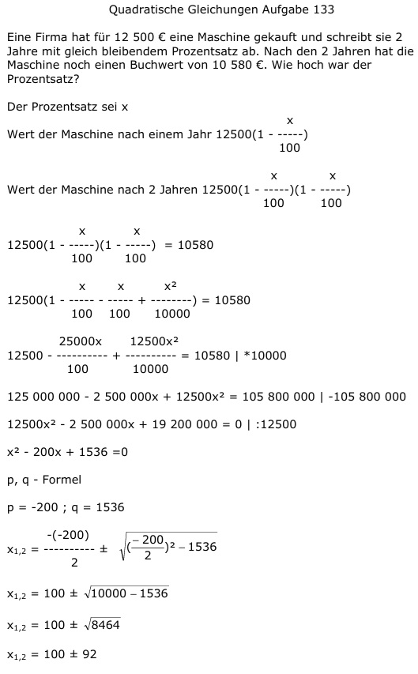

Aufgabe 133 Eine Firma hat für 12 500 € eine Maschine gekauft und schreibt sie 2 Jahre mit gleich bleibendem Prozentsatz ab. Nach den 2 Jahren hat die Maschine noch einen Buchwert von 10 580 €. Wie hoch war der Prozentsatz? Der Prozentsatz sei x x Wert der Maschine nach einem Jahr 12500(1 - -----) 100 Wert der Maschine nach 2 Jahren x x 12500(1 - -----)(1 - -----) 100 100 x x 12500(1 - -----)(1 - -----) = 10580 100 100 x x x2 12500(1 - ----- - ----- + -------) = 10580 100 100 10000 25000x 12500x2 12500 - ---------- + ---------- = 10580 | *10000 100 10000 125 000 000 - 2 500 000x + 12500x2 = = 105 800 000 |-105 800 000 12500x2 - 2 500 000x + 19 200 000 = 0 |:12500 x2 - 200x + 1536 =0 p, q - Formel p = -200 ; q = 1536  x1,2 = 100 ± 92 x1 = 100 + 92 = 192 keine Lösung, Prozentsatz größer als 100%. x2 = 100 - 92 = 8 %